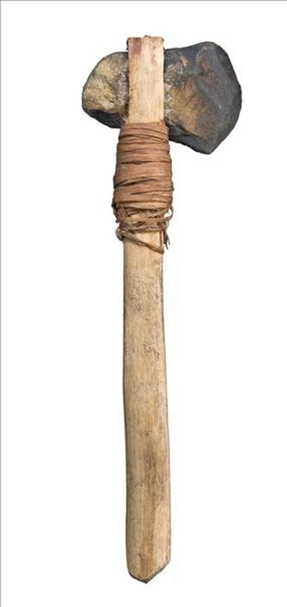
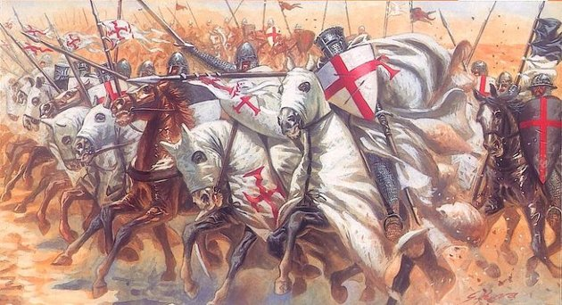

Gun's history
People have always been creative when it comes to how to kill our own fellow human beings. It has the largest budget in almost all industries in the world.
Already in prehistoric times, stones were sharpened and tied to the end of sticks so that they could attack the prey or enemy tribe from a distance. It only evolved and evolved in ancient times.
By this time the armor, which was made of iron, possibly bronze, had played many roles, and the richer ones even used a little gold decoration, by this time the long-range arched armies had taken an important part in the fight. Equestrian knights were very common in the Middle Ages, in this age they were part of the rich, they already wore very heavy armor so they needed the horse because without them in armor up to 50 kg.
